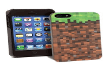
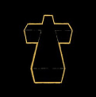
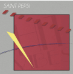
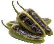
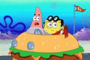

a hora corrente é
perguntas e repostas
1. Por que do você criar este sítio?

Eu querer em mostrar meu trabalhos on-line.
Também porque eu gosto em produção sites.
2.Que é uma lugar você querer em visitar?
Nova Inglaterra. Tanto folhagem aí.
3.Que é um momento feliz durante sua infância?
Meu quinze aniversário. Que grande dia foi.
4. Que foi sua jogo eletrônico primeiro?

Minecraft, na uma iPod touch em 2013.
5. Que cançaos você gosta de escutar?


D.A.N.C.E. por Justice e Have Faith por Saint Pepsi
6. Que é sua coisa mais favorito?
O MetroCard de Nova Iorque.
7. Que foi o comida mais picante para você?

Jalapeños queimado.
8. Que mais você trabalho?
Eu sou estudando para uma diploma universitário de engenheiro.
Eu quero ir em escola de graduado em o futuro.
9. Que filmes você gosta de vejo?

The SpongeBob SquarePants Movie, Hereditary, e The Truman Show.
10. Que é uma fato você sei?
Em Nevada, é uma micronação chamaram Molossia.
per em outro línguas: